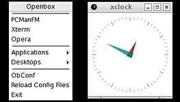
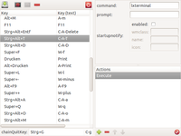

Openbox
Dieser Artikel wurde für die folgenden Ubuntu-Versionen getestet:
Ubuntu 16.04 Xenial Xerus
Ubuntu 14.04 Trusty Tahr
Zum Verständnis dieses Artikels sind folgende Seiten hilfreich:
Openbox  ist ein sehr schneller Fenstermanager, der sich durch seine hohe Anpassungsfähigkeit und einen geringen Ressourcen-Bedarf auszeichnet. Durch Bearbeiten von nur drei Dateien kann man ihn an die eigenen Vorlieben anpassen. Es gibt aber auch Programme, mit denen man Einstellungen und Menüs grafisch konfigurieren kann. Openbox ist der Standard-Fenstermanager der Desktop-Umgebungen LXDE bzw. LXQt und damit auch von Lubuntu. Auch verschiedene inoffizielle Ubuntu Varianten setzen ebenfalls auf Openbox.
ist ein sehr schneller Fenstermanager, der sich durch seine hohe Anpassungsfähigkeit und einen geringen Ressourcen-Bedarf auszeichnet. Durch Bearbeiten von nur drei Dateien kann man ihn an die eigenen Vorlieben anpassen. Es gibt aber auch Programme, mit denen man Einstellungen und Menüs grafisch konfigurieren kann. Openbox ist der Standard-Fenstermanager der Desktop-Umgebungen LXDE bzw. LXQt und damit auch von Lubuntu. Auch verschiedene inoffizielle Ubuntu Varianten setzen ebenfalls auf Openbox.
Openbox kommt insbesondere denjenigen entgegen, die eine individuelle Oberfläche suchen und den Arbeitsaufwand nicht scheuen, eine unter Ubuntu nur rudimentär vorhandene Konfiguration an die eigenen Bedürfnisse anzupassen. Als Musterbeispiel für einen bereits vorkonfigurierten Desktop mit Openbox sei CrunchBang genannt, das die Möglichkeiten des Fenstermanagers ausreizt.
Installation¶
Es müssen folgende Pakete installiert [1] werden:
openbox (universe)
openbox-themes (universe, nur bis Ubuntu 13.10)
obconf (universe)
obmenu (universe)
 mit apturl
mit apturl
Paketliste zum Kopieren:
sudo apt-get install openbox openbox-themes obconf obmenu
sudo aptitude install openbox openbox-themes obconf obmenu
Openbox wird automatisch in die Sitzungsauswahl des jeweiligen Displaymanagers eingetragen und kann von dort aus gestartet werden. Man kann Openbox allerdings auch auf der Konsole mittels:
openbox-session
starten.
Konfiguration¶
Grafische Konfigurations-Tools¶
ObConf¶
Mit dem Programm obconf kann man das Aussehen und Verhalten von Openbox konfigurieren. Folgende Einstellungsmöglichkeiten sind vorhanden:
| ObConf | |
| Option | Wirkung |
| Theme | Themenauswahl (Fensterdekoration, Farben) |
| Appearance | Schriftarten und Layout der Titelzeile eines Fensters |
| Windows | spezielle Fensterfunktionen |
| Move & Resize | Verhalten bei Positions- und/oder Größenänderung eines Fensters |
| Mouse | Fensterfokus und Verhalten beim Doppelklick der Titelzeile |
| Desktops | Anzahl der virtuellen Desktops |
| Margins | Verhalten der Randbereiche des Desktops |
| Dock | zusätzliche Symbol-/Programmleiste |
Weitere Themen (Designs) findet man z.B. auf Box-Look.org . Dateien mit der Endung .obt3 können über die Schaltfläche "Neues Theme installieren" direkt geladen werden. Alternativ können heruntergeladene Archivdateien auch manuell entpackt [3] und in den versteckten Benutzer-Ordner ~/.themes oder bei einer systemweiten Installation mit Root-Rechten [5] nach /usr/share/themes kopiert bzw. verschoben werden.

ObMenu¶
Mit obmenu kann das Kontextmenü ( ) den eigenen Bedürfnissen angepasst werden. Man kann nicht nur einzelne Programmstarter konfigurieren, sondern auch Untermenüs erzeugen. Eine weitere Möglichkeit dazu findet sich (im Menü versteckt) unter "Add".
) den eigenen Bedürfnissen angepasst werden. Man kann nicht nur einzelne Programmstarter konfigurieren, sondern auch Untermenüs erzeugen. Eine weitere Möglichkeit dazu findet sich (im Menü versteckt) unter "Add".
Unter Lubuntu ist obmenu nicht installiert. Stattdessen ist das Kontextmenü mit "Einstellungen der Arbeitsfläche" vorbelegt. Allerdings findet sich unter "Fortgeschritten" die Möglichkeit, "Beim Klicken auf den Desktop die Menüs des Fenstermanagers anzeigen", was dem klassischen Ansatz von Openbox entspricht. Wie man wieder zur alten Voreinstellung von Lubuntu zurückkehrt, steht im Artikel LXDE Einstellungen.
Pipe Menus¶
Eine Spezialität von Openbox sind die "pipe menus". Diese bieten die Möglichkeit, ein externes Skript aufzurufen und die Ausgabe des Skripts wieder an Openbox zu senden. Damit lassen sich dynamische (Unter-)Menüpunkte erzeugen, da bei jeden Aufruf des Menüpunkts das Script erneut abgearbeitet wird. Details finden sich im Artikel Openbox/Pipemenü.
Manuelle Konfiguration¶
Openbox kann über nur drei Dateien vollständig konfiguriert werden: rc.xml, menu.xml und autostart. Dazu wird ein Editor mit Syntaxhervorhebung für XHTML empfohlen, der die Übersicht erleichtert (z.B. Geany). Als Benutzer findet man diese Dateien im Ordner ~/.config/openbox/. Wenn sie nicht vorhanden sind, kann man die systemweiten Konfigurationsdateien im Ordner /etc/xdg/openbox als Vorlage nutzen (ins eigene Homeverzeichnis kopieren) und den eigenen Wünschen anpassen.
| Benutzerspezifische Konfigurationsdateien von Openbox | ||
| Zweck | LXDE | Lubuntu |
| Hauptkonfigurations-Datei (Aussehen, Tastenkürzel (Hotkeys), etc.) | ~/.config/openbox/rc.xml | ~/.config/openbox/lubuntu-rc.xml |
| Konfiguration des Kontextmenüs () | ~/.config/openbox/menu.xml | |
| Autostart-Skript * | ~/.config/openbox/autostart | ~/.config/lxsession/Lubuntu/autostart |
Hinweis:
* Je nach Lubuntu-Version verhält sich die Autostart-Funktion unterschiedlich: Während bis Lubuntu 13.04 der Ordner ~/.config/autostart/ ausgewertet wird, wird ab 13.10 ein eigenes Startskript verwendet.
Die Datei rc.xml wird bei der Installation von /etc/xdg/openbox/rc.xml (bei Lubuntu: /usr/share/lubuntu/openbox/rc.xml) kopiert. Sollte man beim Bearbeiten Fehler machen, greift Openbox immer auf die Originaldatei zurück. Nachfolgend wird eine Auswahl der möglichen Einstellungen beschrieben. Eine ausführliche Beschreibung der Einstellungsmöglichkeiten kann man in der Dokumentation im Ordner /usr/share/doc/openbox oder auf der Projekt-Seite finden.
rc.xml¶
Der Großteil der Einstellungen in der Datei rc.xml lässt sich auch über ObConf realisieren. Einige wenige Einstellungen, wie zum Beispiel das Definieren von Tastenkürzeln, lassen sich aber nur hier realisieren. Da die Datei aber großzügig kommentiert ist, ist das Bearbeiten der Einstellungen nicht schwierig.
Tastenkürzel¶
Im <keyboard>-Abschnitt der rc.xml können Tastenkürzel definiert werden. Um z.B. mit dem Tastenkürzel
Windows +
X das Standardterminal zu starten, ist folgender Eintrag notwendig:
<keybind key="W-x"> <action name="Execute"><execute>x-terminal-emulator</execute></action> </keybind>
Um mit Alt + F1 das Root-Menü von Openbox zu starten, genügt folgender Eintrag:
<keybind key="A-F1"> <action name="ShowMenu"><menu>root-menu</menu></action> </keybind>
Um mit Alt + F2 Programme zu starten:
<keybind key="A-F2"> <action name="Execute"><command>lxpanelctl run</command></action> </keybind>
Weitere Hinweise zu Tastenkürzeln und eine Übersicht der Modifikatortasten und deren Kürzel befinden sich in der Openbox-Dokumentation .

Zur grafischen Konfiguration der Tastaturkürzel steht das Python-Programm obkey zur Verfügung, mit dem die Änderungen bequem vorgenommen werden können.
Hinweis!
Fremdsoftware kann das System gefährden.
Virtuelle Desktops¶
Anzahl und Namen der Virtuellen Desktops kann man per obconf im Reiter "Desktops" einstellen. Alternativ lautet der Abschnitt in der rc.xml:
<desktops> <number>6</number> <firstdesk>1</firstdesk> <names><name>one</name><name>two</name><name>three</name><name>four</name><name>five</name><name>six</name></names> </desktops>
Docks¶
Im gleichnamigen Reiter von obconf lassen sich die Docks konfigurieren. Sie fungieren wie ein unsichtbarer Trayer. Der Abschnitt in der rc.xml sieht wie folgt aus:
<dock> <position>Left</position> <stacking>Top</stacking> <direction>Vertical</direction> <floatingX>0</floatingX> <floatingY>0</floatingY> <autoHide>yes</autoHide> <hideDelay>300</hideDelay> <moveButton>A-Left</moveButton> </dock>
Die Einstellungen werden aber erst übernommen, wenn man im Kontextmenü (Rootmenü) die Aktion "Reconfigure" auswählt - sofern man diesen Eintrag nicht aus der menu.xml entfernt hat.
menu.xml¶
Hinweis:
Unter Lubuntu muss zuerst:
die Datei /usr/share/lubuntu/openbox/menu.xml nach ~/.config/openbox/menu.xml kopiert und
die Verwendung von ~/.config/openbox/menu.xml in ~/.config/openbox/lubuntu-rc.xml aktiviert werden
wenn man das klassische Kontextmenü von Openbox verwenden will.
Im Abschnitt <menu> der rc.xml werden die Dateien definiert, die für das Kontextmenü verantwortlich sind:
<menu> <file>menu.xml</file> <file>~/.config/openbox/my-menu.xml</file> </menu>
Wichtig ist, dass jeder Eintrag mit </> wieder geschlossen wird.
Soll das Debianmenü verwendet werden, muss der entsprechende Eintrag vor <file>menu.xml</file> platziert werden.
<menu> <file>/var/lib/openbox/debian-menu.xml</file> <file>menu.xml</file> <file>~/.config/openbox/my-menu.xml</file> </menu>
Die Syntax des Menüs selbst lautet wie folgt:
Beginn
<?xml version="1.0" encoding="UTF-8"?> <openbox_menu xmlns="http://openbox.org/" xmlns:xsi="http://www.w3.org/2001/XMLSchema-instance" xsi:schemaLocation="http://openbox.org/ file:///usr/share/openbox/menu.xsd">Menü
<menu id="root-menu" label="Openbox"> ... </menu>
Menüeintrag
<item label="Terminal"> <action name="Execute"><execute>x-terminal-emulator</execute></action> </item>Trennlinie
<separator />
Und hier ein Beispiel:
<?xml version="1.0" encoding="UTF-8"?>
<openbox_menu xmlns="http://openbox.org/"
xmlns:xsi="http://www.w3.org/2001/XMLSchema-instance"
xsi:schemaLocation="http://openbox.org/
file:///usr/share/openbox/menu.xsd">
<menu id="root-menu" label="Openbox">
<item label="firefox">
<action name="Execute"><execute>firefox</execute></action>
</item>
<menu id="Einstellungen" label="Einstellungen">
<item label="obconf">
<action name="Execute"><execute>obconf</execute></action>
</item>
</menu>
</menu>
</openbox_menu>automatische Menueinträge¶
Openbox besitzt normalerweise kein Panel, sondern verwendet das Kontextmenü (Rootmenü) bzw. die rechte Maustaste zum Starten von Programmen. LXDE und Lubuntu verwenden lxpanel. Wer ein anderes Panel haben möchte, findet verschiedene Programme im Artikel Desktop.
Um die aktuell installierten Programme ins Kontextmenü zu integrieren, gibt es mehrere Möglichkeiten:
Ein Pipemenü (siehe Openbox/Pipemenü)
Debian-Menü
menu (universe)
mit apturl
Paketliste zum Kopieren:
sudo apt-get install menu
sudo aptitude install menu
XDG-Menü
openbox-xdgmenu (universe)
mit apturl
Paketliste zum Kopieren:
sudo apt-get install openbox-xdgmenu
sudo aptitude install openbox-xdgmenu
Weitere Informationen zu den letzten beiden Programmen sind in der jeweiligen Manpage zu finden.
autostart¶
Um Programme und Shellscripts (Panel, Pager, Hintergrundbild, etc.) direkt beim Starten von Openbox zu laden, muss man die Datei ~/.config/openbox/autostart erstellen bzw. modifizieren. In der globalen Autostart-Datei /etc/xdg/openbox/autostart sind bereits einige Scripts eingetragen, wie zum Beispiel das Setzen eines einfarbigen Hintergrunds. Beim Start werden beide Skripts nacheinander abgearbeitet.
Hinweis:
Die Datei ../openbox/autostart wird nur ausgeführt, wenn mittels openbox-session oder über einen Displaymanager ausdrücklich eine Openbox-Sitzung gestartet wurde. Zum Autostart bei einer LXDE- oder Lubuntu-Sitzung siehe LXDE Einstellungen. Ab Lubuntu 13.10 wird die Datei ~/.config/lxsession/Lubuntu/autostart verwendet.
Die einzelnen Befehle werden einfach zeilenweise aufgelistet. Jeder Eintrag muss mit einem & abgeschlossen werden. Beispiel:
fbpanel & ~/meinscript.sh & bbpager & gtodo &
Falls eine Applikation dennoch nicht starten will, kann man versuchen, die Reihenfolge innerhalb der Datei autostart zu ändern oder sie mit einem sleep Befehl zu kombinieren. Beispiel:
(sleep 3 && pypanel) &
In diesem Beispiel wird drei Sekunden lang gewartet und dann der Befehl pypanel ausgeführt.
Nützliche Programme in ~/.config/openbox/autostart¶
| Nützliche Programme | |
| Programm | Beschreibung |
gnome-settings-daemon | stellt GTK-Theme ein |
gnome-screensaver | startet Bildschirmschoner |
xscreensaver | Alternative zu gnome-screensaver |
gnome-power-manager | Powermanagement (nützlich bei Note- & Netbooks) |
pcmanfm --daemon-mode | automatisches Einbinden für Memorysticks & Co. |
nitrogen --restore | stellt das letzte mit 'nitrogen /ordner/mit/bildern' ausgewählte Hintergrundbild wieder her |
Steuerung¶
Viele wichtige Funktionen sind über Kurztasten definiert. Nachfolgend eine kurze Übersicht:
Tastatur¶
| Tastenkürzel | |
| Taste(n) | Wirkung |
| Strg + Alt + ← | einen Desktop nach links schalten |
| Strg + Alt + → | einen Desktop nach rechts schalten |
| Strg + Alt + ↑ | einen Desktop nach oben |
| Strg + Alt + ↓ | einen Desktop nach unten |
| ⇧ + Alt + ← | mit einem Fenster auf einen Desktop weiter links springen |
| ⇧ + Alt + → | mit einem Fenster auf einen Desktop weiter rechts springen |
| ⇧ + Alt + ↑ | mit einem Fenster auf einen Desktop nach oben springen |
| ⇧ + Alt + ↓ | mit einem Fenster auf einen Desktop nach unten springen |
| Windows + F1 | direkt auf Desktop Fx springen |
| Windows + D | Desktop anzeigen |
| Alt + Esc | Aktuelles Fenster in den Hintergrund |
| Alt + Tab ⇆ | offene Fenster von links nach rechts wechseln (mit Anzeige) |
| Alt + Tab ⇆ + ⇧ | offene Fenster von rechts nach links wechseln (mit Anzeige) |
Maus¶
Auf dem Desktop kann man mit:
| Maus | |
| Maustaste | Wirkung |
| | Kontextmenü anzeigen |
 | Taskliste anzeigen |
| Mausrad | Desktop wechseln |
Gemeinsam mit der Tastatur kann man in Fenstern folgende Aktionen ausführen:
| Maus | |
| Maustaste | Wirkung |
|
Alt + | Fenster vergrößern/verkleinern |
Alt +  | Fenster verschieben |
Weitere Möglichkeiten¶
Desktop-Effekte¶
Dazu wird ein Composite-Manager benötigt. Sehr empfehlenswert in Umfang und Bedienungskomfort ist Compton, das noch aktiv entwickelt und gepflegt wird. Ist ein Composite-Manager aktiv, kann man mit Skippy-XD eine optisch interessante Expose-Funktion verwirklichen.
Opensnap¶
Die ab Windows 7 bekannte Funktion "Aero Snap" kann auch in Openbox genutzt werden. Folgende Anleitung hilft weiter: Areosnap (window to the edge) . Auch im Forum gibt es eine passende Diskussion dazu.
Hintergrundbild¶
Der Desktop-Hintergrund kann mithilfe eines der unter Desktop-Hintergrund beschriebenen Programme gesetzt werden. Auch einige Dateimanager wie Rox-Filer, PCMan File Manager und Nautilus bietet diese Funktionalität.
Desktop-Icons¶
Desktop-Symbole können z.B. mit Werkzeugen wie Backstep , Idesk oder mit den unter Hintergrundbild genannten Dateimanagern (Lubuntu verwendet PCManFM) angezeigt werden. Alle Programme sind in den offiziellen Paketquellen von Ubuntu enthalten.
Bildschirmschoner¶
Einen Bildschirmschoner kann man zum Beispiel mit dem Programm XScreenSaver einrichten. Ab Lubuntu 14.04 kommt stattdessen LightLocker zum Einsatz.
GTK-Design¶
Standardmäßig verwendet Openbox (nicht Lubuntu!) ein graues Standard-GTK-Thema. Im Artikel GTK+ Design wechseln finden sich weitere Informationen, wie man das GTK+ Design umstellt.
Problembehebung¶
Runde Fensterecken¶
Häufig nachgefragt, aber im Konzept von Openbox nicht vorgesehen: das Abrunden der Fensterecken wie bei GNOME oder Xfce. Abhilfe schafft hier nur das Auswechseln des Fenstermanagers.
Links¶
Intern¶
Openbox/Pipemenü - das Kontextmenü mit eigenen Funktionen erweitern
Auswahl spezieller Distributionen für ältere Computer (viele mit Openbox):
Desktop
 Übersichtsartikel
Übersichtsartikel
Extern¶
Openbox - Wikipedia
Openbox-Guide
- sehr ausführliche und nützliche Anleitung, wenn auch inzwischen teilweise veraltetOpenbox Themes and Apps
- Archlinux-WikiLXDE/Openbox keyboard shortcuts cheat sheet
Übersicht der unter Lubuntu vordefinierten Tastenkürzel für Openbox. Blogbeitrag, 09/2012

- Erstellt mit Inyoka
-
 2004 – 2017 ubuntuusers.de • Einige Rechte vorbehalten
2004 – 2017 ubuntuusers.de • Einige Rechte vorbehalten
Lizenz • Kontakt • Datenschutz • Impressum • Serverstatus -
Serverhousing gespendet von